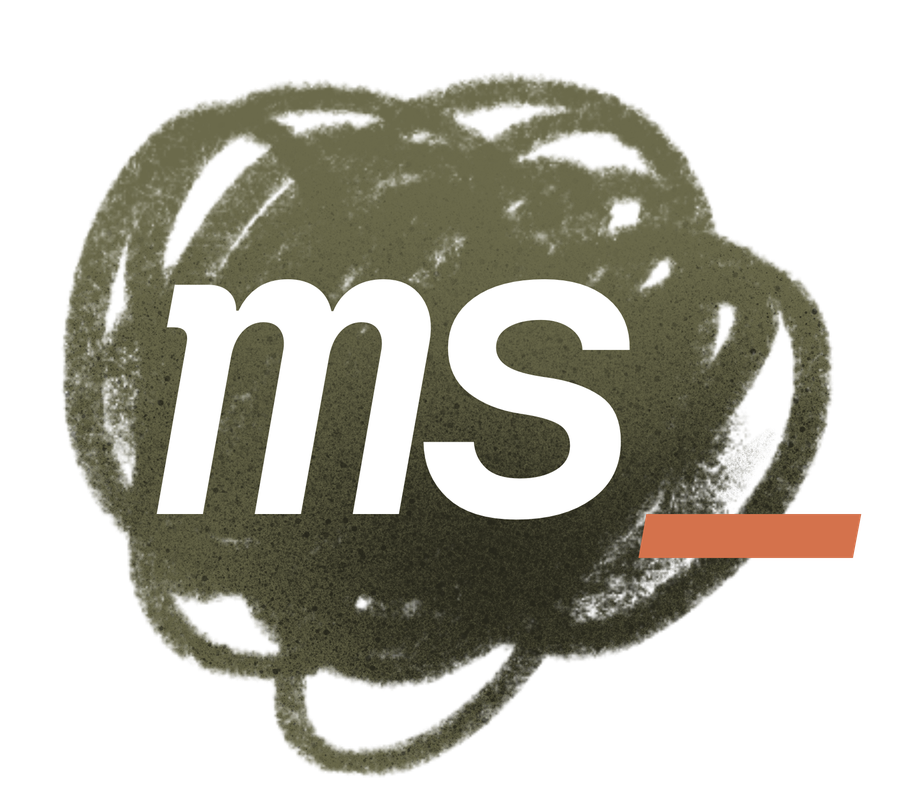
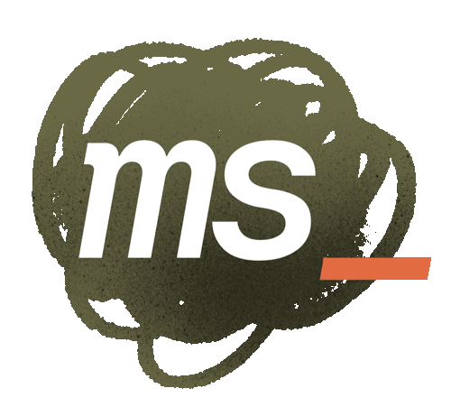

manual.html, um nível acima.Esta página é a apresentação da marca. A especificação
operável — a que as sessões leem e o deck consome — é o
MARCA-MICHEL-STEIN.md, ao lado deste arquivo. Se os dois divergirem,
o .md é o mestre.
A abertura do sistema visual de Michel Stein: o rigor do arquiteto e a autoria do traço num só gesto.
A marca, as três assinaturas e as versões sobre fundo. DM Mono Medium itálico, caixa-baixa, com tracking fechado em −.06em.
DM Mono Medium itálico (500), caixa-baixa, tracking −.06em. O underscore terracota é fixo — parte do logotipo, não cursor. Único ponto de cor quente.
Principal. É a da abertura de deck e a do topo do site: o nome vai pequeno e quem carrega o peso é o slogan. Slogan em DM Mono 500 itálico caixa-baixa, na oliva, com o traço terracota no fim. O arquiteto ao lado do nome é DM Mono 400 reto, 0,68em, caixa-baixa, +.02em, em --muted — nunca em terracota, que disputaria com o traço. O respiro de 1,1em vai como margin-left no <em>, nunca como gap de flex: o gap entra também entre o nome e o traço e descola o underscore. Liga com frase:true no gabarito marca.
Inverte a hierarquia: o nome grande, a tagline abaixo em DM Mono itálico regular, na oliva, com respiro igual à altura do "m". Para a peça em que o nome é a informação — capa de proposta, ficha técnica, crédito de autoria.
A primeira linha da principal, sozinha. Rodapé de peça, chrome de navegação, assinatura de e-mail, e qualquer lugar de uma linha só. O arquiteto em texto corrido é exceção consciente à regra de label da folha 04, que pede caixa-alta e +.20em: aqui se quer a leitura do site, não a de metadado.
Em qualquer fundo, o traço permanece terracota — desde que haja contraste suficiente. Evitar fundos quentes de tom próximo (ver regras na Folha 04).
Monograma em DM Mono Medium itálico — o peso mais encorpado da família. Sistema de dois níveis: ms_ principal, m_ como ícone reduzido.
DM Mono Medium itálico, caixa-baixa. A inclinação dá o gesto da mão; o underscore terracota é o traço — fixo, único ponto de cor quente.
Uso: assinatura geral — cartão, e-mail, portfólio, redes. Carrega as iniciais completas. Em tamanho médio/grande o itálico respira bem.
Uso: tamanhos mínimos — favicon, avatar pequeno, selo. O traço isolado ganha presença e segura a leitura mesmo reduzido.


O ms_ em branco sobre um rabisco de oliva, com o traço terracota deslocado. Existe em estática e em animada, e é a única peça da identidade que carrega gesto desenhado em vez de tipografia pura.
⚠ Esta versão ainda não tem regra escrita: não está definido onde ela pode e onde não pode entrar, nem qual o tamanho mínimo, nem como se comporta sobre fundo escuro (o PNG tem fundo transparente e o branco do ms some sobre creme claro). Até que a regra exista, usar só em contexto informal — avatar, selo, assinatura de redes — e nunca em documento formal ou proposta.
Mestre em resolução plena: assets/scribble-ms.png, 1679 × 1513.
Tipografia, cor e regras de uso. A base do sistema visual: o que é fixo, as proporções e o que não fazer.
A marca vive em creme e tinta, com a oliva como secundária forte — presente em blocos, fundos de seção, avatares e detalhes de layout. A terracota fica reservada ao traço (_) ou a uma única palavra de destaque — nunca em áreas grandes, nunca como fundo. É o que mantém a cor quente contida e a afasta da paleta da antiga identidade.
Mantenha ao redor do logotipo uma margem livre igual à altura do "m". Nada de texto, imagem ou borda dentro dessa zona.
Abaixo desses tamanhos o traço perde definição. Para favicon e avatar muito pequeno, use o m_ em vez do logotipo completo.
a frase inteira, em oliva
a palavra sozinha, em terracota
Não é negrito: é marca de caneta por trás do texto. Oliva grifa frase; terracota grifa palavra — a divisão é de extensão, e é ela que mantém a cor quente contida. Acompanha a quebra de linha por box-decoration-break: clone, com respiro simétrico de 6px. No deck, a mesma faixa se desenha da esquerda para a direita em 620 ms.
Filete de 40 × 1px em terracota, respiro de 10px e etiqueta de fundo cheio com texto creme, em 10px e +.20em. Só para chamada de ação, e só em rótulo curto — é a exceção pequena à regra de que terracota não é área.
A cor do número diz que tipo de número ele é. Terracota é ordem; tinta é quantidade; oliva é tempo. Fora dessa escala, número não recebe cor.
A identidade no mundo real: cartão de visita, assinatura de e-mail e papelaria. Contatos são exemplos — substituir pelos reais.
Dica de implementação: em clientes de e-mail, montar como tabela HTML simples; usar a fonte do sistema (a mono não carrega em todos), mantendo o traço terracota (#B85C38) como único toque de cor e a estrutura avatar + filete + dados.
⚠ O telefone ainda é placeholder (99999-0000). Substituir pelo real antes de mandar imprimir ou de usar como assinatura.
Papel timbrado com logotipo à esquerda e contato à direita; avatares usando ms_ no social e m_ nos tamanhos mínimos.